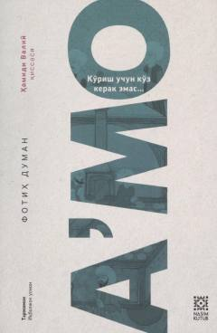

AKo'rish uchun ko'z emas, qalb kerakligini anglatuvchi ta'sirli roman.
Ushbu asar ko'rish uchun ko'z emas, qalb kerakligini anglatuvchi chuqur ma'naviy va psixologik mazmunga ega bo'lgan romandir. Muallif insonning ichki dunyosi, his-tuyg'ulari va hayotiy sinovlariga bo'lgan qarashlarini o'ziga xos uslubda bayon etadi.